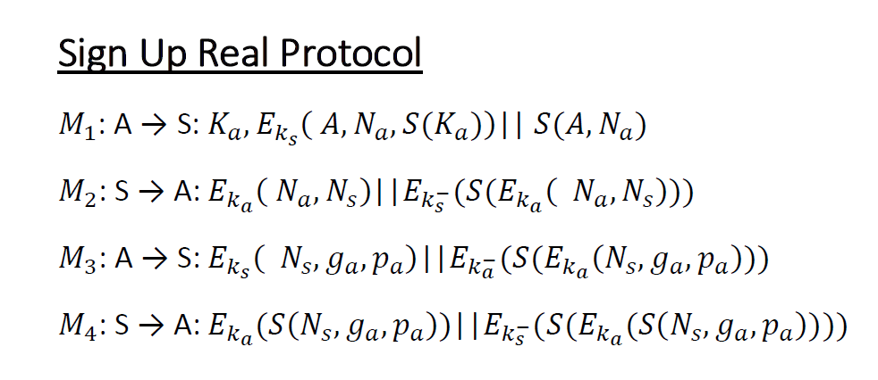

Introduction to MPS Protocol¶
MPS Protocol is an End-to-End Protocol that establishes a secure communication channel between 2 clients. The purpose of the server is just to store clients information so that they can establish a secure session key, that is unknown even to the server. It consists of a suite of 4 protocols.
Protocols¶
- Sign Up Protocol
- Authentication Protocol
- Online Key Exchange Protocol
- Offline Communication
Sign Up Protocol¶
The Sign Up Protocol describes the messages exchanged between Client and Server in order to save into the Server’s database the Client’s Public Key and the Diffie Hellman parameters. Every message, besides M1, is signed using hash-then-sign RSA digital signature.
The Public Key in M1 is sent in plaintext because its size is too big to be encrypted with RSA using the Server’s public key and since it’s a public key there is nothing to worry about. The encrypted portion of M1 contains Alice’s identifier, a nonce that will be used to guarantee the freshness of M2 and the Alice’s public key digest to ensure its integrity.
M2 is just a notification that the Server is ready to save Alice’s information and to do that it sends its nonce to ensure freshness of M3
Alice now is ready to send her Diffie Hellman parameters sending back server’s nonce
The Server send back a digest ( less bytes, better performance ) of M3’s data, so that Alice can realize that Server has received the DH parameters.
